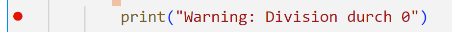
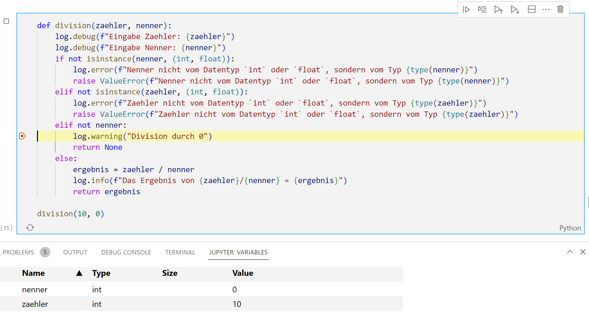

def division(zaehler, nenner):
print(f"Debug: Eingabe Zaehler: {zaehler}")
print(f"Debug: Eingabe Nenner: {nenner}")
if not isinstance(nenner, (int, float)):
print(f"Error: Nenner nicht vom Datentyp `int` oder `float`, sondern vom Typ {type(nenner)}")
raise ValueError(f"Nenner nicht vom Datentyp `int` oder `float`, sondern vom Typ {type(nenner)}")
elif not isinstance(zaehler, (int, float)):
print(f"Error: Zaehler nicht vom Datentyp `int` oder `float`, sondern vom Typ {type(zaehler)}")
raise ValueError(f"Zaehler nicht vom Datentyp `int` oder `float`, sondern vom Typ {type(zaehler)}")
elif not nenner:
print("Warning: Division durch 0")
return None
else:
ergebnis = zaehler / nenner
print(f"Info: Das Ergebnis von {zaehler}/{nenner} = {ergebnis}")
return ergebnisDebugging

Everyone knows that debugging is twice as hard as writing a program in the first place.
— Brian Kernighan
Ausgangslage
Die 5-Schritt-KI-Debugging-Strategie
Werkzeuge implementieren die Strategie
Die 5-Schritt-Strategie beschreibt das Vorgehen, die folgenden Werkzeuge machen die relevanten Beobachtungen sichtbar. Entscheidend ist nicht die Wahl des Werkzeugs, sondern die systematische Anwendung der Strategie.
Die Schritte 1 bis 5 greifen dabei ineinander: Reproduktion und Isolierung schaffen einen stabilen Testfall, Hypothesen lenken den Blick, und Werkzeuge wie print(), logging oder ein Debugger liefern die Informationen zur Inspektion und anschließenden Re-Verifikation.
Die 5-Schritt-Strategie in der Praxis
Die Strategie dient als wiederholbarer Ablauf für logische Fehler ohne offensichtliche Exception. Zuerst wird das Fehlverhalten mit einem kleinen Beispiel reproduziert. Danach wird der Fehler auf eine Funktion oder einen klar umrissenen Teil des Programms isoliert.
Auf dieser Grundlage formuliert man eine Hypothese: Welche Annahme im Code könnte falsch sein? Anschließend wird die Ausführung inspiziert, zum Beispiel mit gezielten Ausgaben oder einem Debugger. Erst wenn die Ursache identifiziert ist, wird ein minimaler Fix vorgenommen und mit denselben Tests re-verifiziert.
Debugging mit print()
Logische Fehler treten häufig erst dynamisch auf und lassen sich nicht durch statische Code-Analyse durch Lint-Tools finden. Hier muss man den aktuellen Programmfluss nachvollziehen. Dies nennt man Debugging. Die einfachste Form ist das print-Debugging, bei dem der Code gezielt mit print()-Befehlen versehen wird.
Wir ergänzen die Divisionsfunktion um mehrere print()-Statements. Üblich ist es zum Beispiel, die Eingangsparameter auszugeben, Fehler und Warnungen sichtbar zu machen und Ergebnisse zu protokollieren.
Jetzt können wir insbesondere im Fehlerfall sehr gut nachvollziehen was genau geschehen ist. Zum Beispiel bei der Division durch 0.
division(10, 0)Debug: Eingabe Zaehler: 10
Debug: Eingabe Nenner: 0
Warning: Division durch 0Allerdings haben wir auch im korrekten Fall sehr viele Ausgaben. Das kann sehr störend sein, weil man dann richtige Fehler sehr schnell übersieht. Zum Beispiel erzeugen wir zehn Divisionen, von der eine eine Division durch 0 war.
for nenner in range(-2, 8):
division(10, nenner)Debug: Eingabe Zaehler: 10
Debug: Eingabe Nenner: -2
Info: Das Ergebnis von 10/-2 = -5.0
Debug: Eingabe Zaehler: 10
Debug: Eingabe Nenner: -1
Info: Das Ergebnis von 10/-1 = -10.0
Debug: Eingabe Zaehler: 10
Debug: Eingabe Nenner: 0
Warning: Division durch 0
Debug: Eingabe Zaehler: 10
Debug: Eingabe Nenner: 1
Info: Das Ergebnis von 10/1 = 10.0
Debug: Eingabe Zaehler: 10
Debug: Eingabe Nenner: 2
Info: Das Ergebnis von 10/2 = 5.0
Debug: Eingabe Zaehler: 10
Debug: Eingabe Nenner: 3
Info: Das Ergebnis von 10/3 = 3.3333333333333335
Debug: Eingabe Zaehler: 10
Debug: Eingabe Nenner: 4
Info: Das Ergebnis von 10/4 = 2.5
Debug: Eingabe Zaehler: 10
Debug: Eingabe Nenner: 5
Info: Das Ergebnis von 10/5 = 2.0
Debug: Eingabe Zaehler: 10
Debug: Eingabe Nenner: 6
Info: Das Ergebnis von 10/6 = 1.6666666666666667
Debug: Eingabe Zaehler: 10
Debug: Eingabe Nenner: 7
Info: Das Ergebnis von 10/7 = 1.4285714285714286Debugging mit logging
Deshalb verwendet man bei komplexeren Programmen meist ein logging-Paket. Dieses erlaubt es, Ausgaben Kategorien zuzuordnen und anhand dieser zu filtern. In der Python-Bibliothek logging sind die Kategorien: debug, info, warning, error und critical.
import logging
log=logging.getLogger("meinlog")
def division(zaehler, nenner):
log.debug(f"Eingabe Zaehler: {zaehler}")
log.debug(f"Eingabe Nenner: {nenner}")
if not isinstance(nenner, (int, float)):
log.error(f"Nenner nicht vom Datentyp `int` oder `float`, sondern vom Typ {type(nenner)}")
raise ValueError(f"Nenner nicht vom Datentyp `int` oder `float`, sondern vom Typ {type(nenner)}")
elif not isinstance(zaehler, (int, float)):
log.error(f"Zaehler nicht vom Datentyp `int` oder `float`, sondern vom Typ {type(zaehler)}")
raise ValueError(f"Zaehler nicht vom Datentyp `int` oder `float`, sondern vom Typ {type(zaehler)}")
elif not nenner:
log.warning("Division durch 0")
return None
else:
ergebnis = zaehler / nenner
log.info(f"Das Ergebnis von {zaehler}/{nenner} = {ergebnis}")
return ergebnisWenn wir jetzt die Funktion aufrufen, sehen wir nur noch die Warnung zur Division durch 0.
log.setLevel(logging.WARNING)
for nenner in range(-2, 8):
division(10, nenner)Division durch 0Wir können allerdings bei Bedarf, etwa bei der Fehlersuche, den Loglevel auch erhöhen. Zum Beispiel wollen wir alle Debug-Nachrichten erhalten.
log.setLevel(logging.DEBUG)
for nenner in range(-2, 8):
division(10, nenner)Division durch 0Ferner erlaubt das Logging auch, automatisch weitere Informationen hinzuzufügen. Wir sehen im Log oben bereits nicht nur das Level (INFO, DEBUG, WARNING), sondern auch den Namen des Loggers (meinlog). Wir können dieses Format anpassen, um z. B. auch die Zeit auszugeben. Das ist insbesondere wichtig, um zu verstehen, wann etwas passiert ist.
sh=logging.StreamHandler()
formatter = logging.Formatter('%(asctime)s %(name)s %(levelname)s: %(message)s')
sh.setFormatter(formatter)
log.addHandler(sh)
log.setLevel(logging.INFO)
for nenner in range(-2, 8):
division(10, nenner)2026-06-18 11:46:38,594 meinlog INFO: Das Ergebnis von 10/-2 = -5.0
2026-06-18 11:46:38,594 meinlog INFO: Das Ergebnis von 10/-1 = -10.0
2026-06-18 11:46:38,595 meinlog WARNING: Division durch 0
2026-06-18 11:46:38,595 meinlog INFO: Das Ergebnis von 10/1 = 10.0
2026-06-18 11:46:38,595 meinlog INFO: Das Ergebnis von 10/2 = 5.0
2026-06-18 11:46:38,595 meinlog INFO: Das Ergebnis von 10/3 = 3.3333333333333335
2026-06-18 11:46:38,595 meinlog INFO: Das Ergebnis von 10/4 = 2.5
2026-06-18 11:46:38,595 meinlog INFO: Das Ergebnis von 10/5 = 2.0
2026-06-18 11:46:38,596 meinlog INFO: Das Ergebnis von 10/6 = 1.6666666666666667
2026-06-18 11:46:38,596 meinlog INFO: Das Ergebnis von 10/7 = 1.4285714285714286In der Praxis wird das Logging sehr häufig insbesondere in Cloud-Anwendungen verwendet. Da diese ja keine Bildschirme haben, müssen Fehler in Logs gesucht werden. Solange alles ok ist, läuft so eine Anwendung dann z.B. im Log-Level INFO, mit nur wenig Ausgaben. Tritt ein Fehler auf, so wird der Server auf das Log-Level DEBUG gesetzt und man sucht in den detaillierten Logs dann nach Informationen, um den Fehler einzugrenzen.
Debugging durch Debug-Oberflächen
Viele integrierte Entwicklungsumgebungen (IDE) bieten an direkt Debugger auszuführen. Diese Debugger erlauben es die dynamische Ausführung des Codes zu unterbrechen. Ziel ist es kurz vor Auftreten des Fehlers die Ausführung anzuhalten, um dann das Fehlerverhalten genau beobachten zu können.
Dabei werden meist zwei Formen der Unterbrechung unterstützt:
- Die Unterbrechung in bestimmten Code-Zeilen mit Hilfe von Breakpoints.
- Die Unterbrechung bei bestimmten Exceptions.
Debugging in Jupyter-Notebooks in VSCode
Die Debug-Oberflächen sehen je nach IDE etwas anders aus, verfügen aber über ähnliche Funktionen. Dieses Jupyter Notebook wurde in VSCode geschrieben, welches wir als erstes Beispiel betrachten.
Dafür kann man meist in der IDE links neben eine Zeile klicken um einen Breakpoint ⬤ zu setzen. Wir setzen dafür einen Breakpoint auf die Zeile 11 auf die Ausgabe der Warnung.

Dann wird der Code in einer speziellen Debugumgebung ausgeführt, die es erlaubt, die Ausführung zu unterbrechen. In unserem Notebook in VSCode starten wir diese durch das Symbol .
def division(zaehler, nenner):
log.debug(f"Eingabe Zaehler: {zaehler}")
log.debug(f"Eingabe Nenner: {nenner}")
if not isinstance(nenner, (int, float)):
log.error(f"Nenner nicht vom Datentyp `int` oder `float`, sondern vom Typ {type(nenner)}")
raise ValueError(f"Nenner nicht vom Datentyp `int` oder `float`, sondern vom Typ {type(nenner)}")
elif not isinstance(zaehler, (int, float)):
log.error(f"Zaehler nicht vom Datentyp `int` oder `float`, sondern vom Typ {type(zaehler)}")
raise ValueError(f"Zaehler nicht vom Datentyp `int` oder `float`, sondern vom Typ {type(zaehler)}")
elif not nenner:
log.warning("Division durch 0")
return None
else:
ergebnis = zaehler / nenner
log.info(f"Das Ergebnis von {zaehler}/{nenner} = {ergebnis}")
return ergebnis
division(10, 0)2026-06-18 11:46:38,601 meinlog WARNING: Division durch 0Dies startet den Debug-Modus. In diesem wird die aktuelle Zeile hervorgehoben, ebenso werden die aktuellen Variablen im Speicher angezeigt.

In der Debugumgebung kann man dann Zeile für Zeile vorgehen durch drücken von und damit nachvollziehen wie das Programm bearbeitet wird und welche Variablen sich ändern.
Multi-Funktions-Modul Walkthrough
Mehrere Funktionen systematisch verfolgen
KI-generierter Code besteht oft aus mehreren aufeinander aufbauenden Funktionen. Dann genügt es nicht mehr, nur einzelne Werte mit print() auszugeben. Stattdessen verfolgt man die Aufrufkette systematisch: zuerst am Einstiegspunkt stoppen, dann gezielt in verdächtige Funktionen hineinsteigen und nach jedem Rückgabewert prüfen, ob die Erwartung noch erfüllt ist.
Die drei Debug-Schritte in diesem Walkthrough geben dafür eine einfache Heuristik vor: am Einstieg starten, passende Navigationsbefehle (Step Into, Step Over, Step Out) wählen und nach jeder Ebene den Zustand mit der Hypothese abgleichen. So lässt sich eingrenzen, in welcher Funktion die erste falsche Annahme wirksam wird.
Die folgende Übungsaufgabe soll die 5-Schritt-Strategie explizit einüben. Ziel ist nicht nur, eine Lösung zu finden, sondern den Fehler mit Testfall, Hypothese, Beobachtung und Re-Verifikation nachvollziehbar zu dokumentieren.
Quiz
---
shuffleQuestions: false
shuffleAnswers: true
---
### Was versteht man unter Debugging?
- [x] Das Finden und Beheben von Fehlern im Programmcode
- [ ] Die Optimierung des Programmcodes
- [ ] Das Schreiben von Dokumentation
- [ ] Das Formatieren von Quellcode
### Warum reicht statische Code-Analyse allein nicht aus?
- [x] Weil logische Fehler zur Laufzeit auftreten können
- [ ] Weil sie keine Sicherheitslücken erkennt
- [ ] Weil sie den Code langsamer macht
- [ ] Weil sie nicht mit Python funktioniert
### Was ist `print`-Debugging?
- [x] Das Einfügen von `print()`-Befehlen zur Laufzeitanalyse
- [ ] Das Entfernen aller `print()`-Befehle
- [ ] Ein automatisiertes Debugging-Verfahren
- [ ] Ein grafischer Debugger
### Was ist der Zweck von `logging` in Python?
- [x] Protokollierung von Ereignissen und Fehlern
- [ ] Optimierung der Programmausführung
- [ ] Erstellen von Benutzeroberflächen
- [ ] Automatisches Testen von Funktionen
### Sortiere die folgenden Zeilen, um einen vollständigen `try-except`-Block korrekt aufzubauen
1. `def division(zaehler, nenner):`
2. ` print(f"Debug: Eingabe Zaehler: {zaehler}")`
3. ` print(f"Debug: Eingabe Nenner: {nenner}")`
4. ` if not isinstance(nenner, (int, float)):`
5. ` print(f"Error: Nenner nicht vom Datentyp `int` oder `float`, sondern vom Typ {type(nenner)}")`
6. ` raise ValueError(f"Nenner nicht vom Datentyp `int` oder `float`, sondern vom Typ {type(nenner)}")`
7. ` elif not isinstance(zaehler, (int, float)):`
8. ` print(f"Error: Zaehler nicht vom Datentyp `int` oder `float`, sondern vom Typ {type(zaehler)}")`
9. ` raise ValueError(f"Zaehler nicht vom Datentyp `int` oder `float`, sondern vom Typ {type(zaehler)}")`
10. ` elif not nenner:`
11. ` print("Warning: Division durch 0")`
12. ` return None`
13. ` else:`
14. ` ergebnis = zaehler / nenner`
15. ` print(f"Info: Das Ergebnis von {zaehler}/{nenner} = {ergebnis}")`
16. ` return ergebnis`
### Was passiert bei einer Division durch Null im folgenden Code?
```python
def division(zaehler, nenner):
print(f"Debug: Eingabe Zaehler: {zaehler}")
print(f"Debug: Eingabe Nenner: {nenner}")
if not isinstance(nenner, (int, float)):
...
elif not nenner:
print("Warning: Division durch 0")
return None
```
- [x] Eine Warnung wird ausgegeben und `None` zurückgegeben.
- [ ] Es erfolgt ein Abbruch durch `ZeroDivisionError`.
- [ ] Es wird 0 zurückgegeben.
- [ ] Der Nenner wird automatisch auf 1 gesetzt.